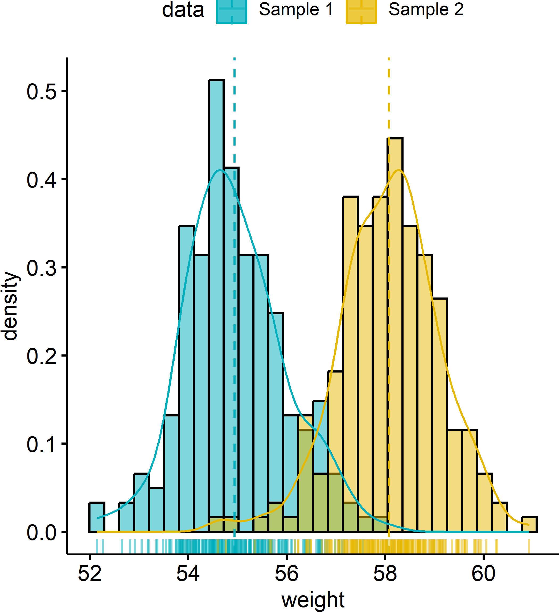
Basic Statistical Analysis
Pablo E. Gutiérrez-Fonseca, PhD
University of Puerto Rico
Thursday, December 4, 2025
Basic Statistical analysis
- Now we are going to cover how to perform a variety of basic statistical tests in R.
- T-tests
- Correlation
- Linear Regression
- One-way ANOVA
Basic Statistical analysis
- Now we are going to cover how to perform a variety of basic statistical tests in R.
- T-tests (independent and dependent)
- Correlation (Pearson, Spearman, Kendall)
- Linear Regression (Simple, Multiple, Logistic, )
- One-way ANOVA (Factorial ANOVA, Full Factorial ANOVA, Repeated Measures ANOVA)
t-tests
t-tests
A t-test is an inferential statistic used to determine if there is a statistically significant difference between the means of two variables.
Student t-test is named after its inventor, William Gosset (English statistician, chemist and brewer), who published under the pseudonym of student.
When would you run a t-test?
- You have a continuous response variable.
- You want to test for a difference between two sample means: considering the variance within each group, do the groups belong to two distinct populations, or not?
- Data is normally distributed and both groups have approximately equal variance.
- If the groups are not related in any way = Independent t-test
- If the groups are related (paired) = Dependent t-test (or matched pairs t-test).
Independent vs. Dependent groups
How do I know if my samples are independent or dependent?
Can you tell exactly which observation should be paired with which other observation? If you can’t tell, your groups are independent
Independent vs. Dependent groups
Examples of Independent Samples 1. Treated and untreated, randomly located plots.
2. Monitoring sites set up with Systematic (grid) sampling.
3. Infested and uninfested forest stands selected with stratified random sampling.
Examples of Dependent Samples 1. Before and After data taken on the same observation.
2. Paired watersheds / plots.
3. Parent / offspring studies.
4. Twin studies / partner studies.
t-tests
The T-test is performed using the
t.test()function, which essentially tests for the difference in means of a variable between two groups. It can perform a one sample t-test, two sample t-test, and a paired t-test.In this syntax
t.text(x, y), x and y are the columns of data for each group. It performs a two sample t-test assuming unequal variances.
Example: Two-tailed t-test
Research Question: The state is looking to choose a stream for habitat restoration for native trout species. Streams with deeper pools will provide necessary cover in the winter months and minimize potential scouring from severe rain events. Which stream should they focus on? Test to see if there is a significant difference in depth between stream 1 and stream 2?
Step 1. Normality test
- Test for normality
Step 2. Equal variance
F test to compare two variances
data: depth_cm by waterbody
F = 0.99478, num df = 32, denom df = 37, p-value = 0.9945
alternative hypothesis: true ratio of variances is not equal to 1
95 percent confidence interval:
0.5080442 1.9810856
sample estimates:
ratio of variances
0.9947842 Step 3: Conducting the t-test
t.test(filter(stream_data, waterbody == "stream1")$depth_cm,
filter(stream_data, waterbody == "stream2")$depth_cm,
alternative = "two.sided",
mu = 0,
paired = FALSE,
var.equal = TRUE)
Two Sample t-test
data: filter(stream_data, waterbody == "stream1")$depth_cm and filter(stream_data, waterbody == "stream2")$depth_cm
t = -12.924, df = 69, p-value < 0.00000000000000022
alternative hypothesis: true difference in means is not equal to 0
95 percent confidence interval:
-13.298846 -9.742143
sample estimates:
mean of x mean of y
44.42424 55.94474 Visualization
ggplot(stream_data, aes(x = waterbody,
y = depth_cm,
fill = waterbody)) +
geom_boxplot() +
stat_summary(fun = mean, geom = "point",
shape = 5, size = 4, color = "black") +
labs(title = "Depth Measurements in Stream 1 and Stream 2",
x = "Waterbody",
y = "Depth (cm)") +
theme_minimal() +
scale_fill_manual(values =
c("#00AFBB", "#E7B800")) +
theme(legend.position = "none")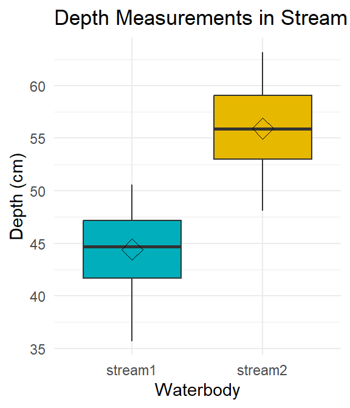
Correlation
What is correlation?
- A correlation test quantifies how two variables change together.
- Are the variables closely related?
- To what extent does one variable predict the other?
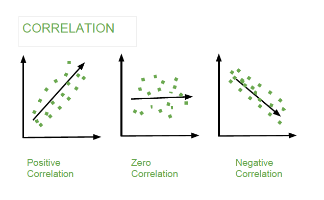
When to use correlation?
Correlation test is used to evaluate the association between two or more variables.
You have two continuous variables measured from the same observational unit.
You want to determine if the variables are related (vary in unison).
Key assumptions:
Independent, random samples.
Normality:
- Pearson correlation (parametric): Assumes both variables follow a normal distribution.
- Spearman correlation (nonparametric): Does not assume normality.
Linear relationship: Correlation looks for a linear association between the variables.
Describing correlations
- Strength: Indicates how closely the variables are related.
- Categories: Weak, Moderate, Strong
- Nature: Shows the direction of the relationship.
- Direct (Positive): As one variable increases, so does the other.
- Indirect (Negative): As one variable increases, the other decreases.
- Significance: Assesses if the correlation is meaningful.
- Based on the p-value, which tells us if the observed relationship is likely due to chance.
Correlation in R
cor()performs correlation in R
Nature and Interpretation of \(r\) Value
Perfect Positive Correlation: \(r=+1\)
- All points lie on an upward-sloping line.
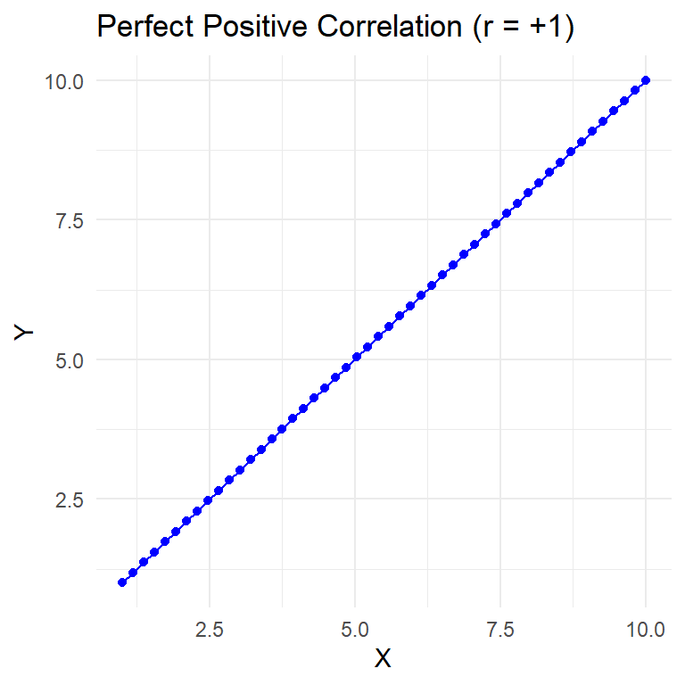
Nature and Interpretation of \(r\) Value
- Perfect Positive Correlation: \(r=+1\)
- All points lie on an upward-sloping line.
- No Correlation: \(r=0\)
- Points do not align along any line, or they form a horizontal line.
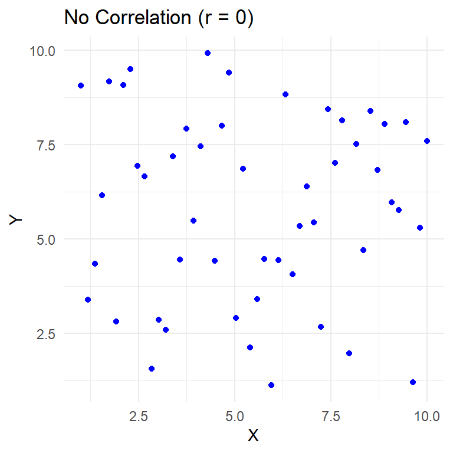
Nature and Interpretation of \(r\) Value
- Perfect Positive Correlation: \(r=+1\)
- All points lie on an upward-sloping line.
- No Correlation: \(r=0\)
- Points do not align along any line, or they form a horizontal line.
- Perfect Negative Correlation: \(r=−1\)
- All points lie on a downward-sloping line.
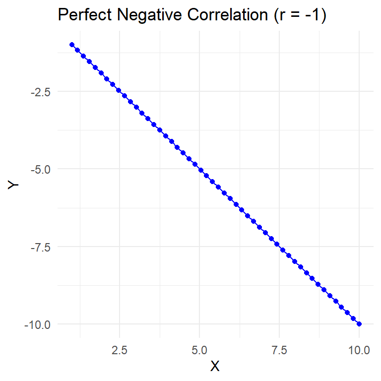
Nature and Interpretation of \(r\) Value
- Perfect Positive Correlation: \(r=+1\)
- All points lie on an upward-sloping line.
- No Correlation: \(r=0\)
- Points do not align along any line, or they form a horizontal line.
- Perfect Negative Correlation: \(r=−1\)
- All points lie on a downward-sloping line.

- Note: When \(∣r∣=1\), we have a perfect correlation, meaning all points fall precisely along a straight line.
Strength of Correlation
- Weak Correlation:
- \(0.0≤ ∣r∣ <0.3\)
- Moderate Correlation:
- \(0.3≤∣r∣<0.7\)
- Strong Correlation:
- \(0.7≤∣r∣0.9\)
- Perfect Correlation:
- \(∣r∣=1.0\)
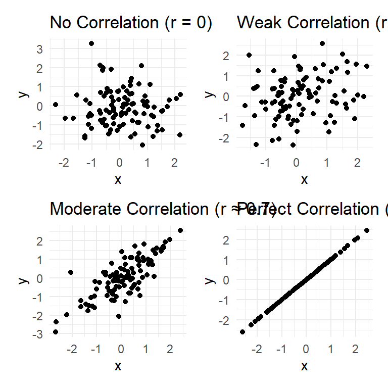
Coefficient of Determination ( \(r^2\) )
\(r^2\) quantifies the proportion of variability in one variable that can be explained by its relationship with the other variable.
It represents the shared variability between the two variables, indicating how much of the total variability they have in common.
When two variables are correlated, \(r^2\) tells us how much variance in one variable can be accounted for by the other.
This concept is similar to the Effect Size we examined in ANOVA.
Difference between \(r\) and \(r^2\)
\(r\) (Pearson’s Correlation Coefficient):
- Measures how much two variables vary together.
- Ranges from -1 to 1:
- -1: Perfect negative correlation
- 0: No correlation
- 1: Perfect positive correlation
- Unitless and applicable across contexts.
- Ranges from -1 to 1:
- Measures how much two variables vary together.
Difference between \(r\) and \(r^2\)
- \(r\) (Pearson’s Correlation Coefficient):
- Measures how much two variables vary together.
- Ranges from -1 to 1:
- -1: Perfect negative correlation
- 0: No correlation
- 1: Perfect positive correlation
- Unitless and applicable across contexts.
- Ranges from -1 to 1:
- Measures how much two variables vary together.
- \(r^2\) (Coefficient of Determination):
- Indicates the proportion of variability explained by the relationship.
- Ranges from 0 to 1:
- 0: No variability explained
- 1: All variability explained
- Interpreted as the percentage of variance explained.
- Ranges from 0 to 1:
- Indicates the proportion of variability explained by the relationship.
Example: Correlation
Relationship between CO₂ and Global Temperature
Load Data: Import the dataset containing global temperature and CO₂ concentration.
Relationship between CO₂ and Temperature
Test for Normality: Use Shapiro-Wilk tests to check if temperature and Mona_Loa_co2 are normally distributed.
Relationship between CO₂ and Temperature
Test for Normality: Use Shapiro-Wilk tests to check if temperature and Mona_Loa_co2 are normally distributed.
Relationship between CO₂ and Temperature
This code performs a Spearman correlation test to examine the relationship between global temperature and CO₂ concentration.
#Test correlation (parametric)
test <- cor.test(global_T$temperature,
global_T$Mona_Loa_co2,
method = "spearman")
test
Spearman's rank correlation rho
data: global_T$temperature and global_T$Mona_Loa_co2
S = 2403.6, p-value < 0.00000000000000022
alternative hypothesis: true rho is not equal to 0
sample estimates:
rho
0.9332148 Coefficient of Determination (R²) for Spearman Correlation
Approximate the proportion of variance in temperature explained by CO₂ concentration.
Data visualization
ggplot(global_T,
aes(x = Mona_Loa_co2,
y = temperature)) +
geom_line() +
geom_point() +
geom_smooth() +
# ylim(14,14.75) +
labs(x = "CO2 (ppm)",
y = "Temperature (C)",
title = "") +
annotate("text", x = 375, y = 14.8,
label = paste("Spearman's correlation =",
round(rho, 2), "\n",
"p =", format.pval(p_value)),
hjust = 1, vjust = 0)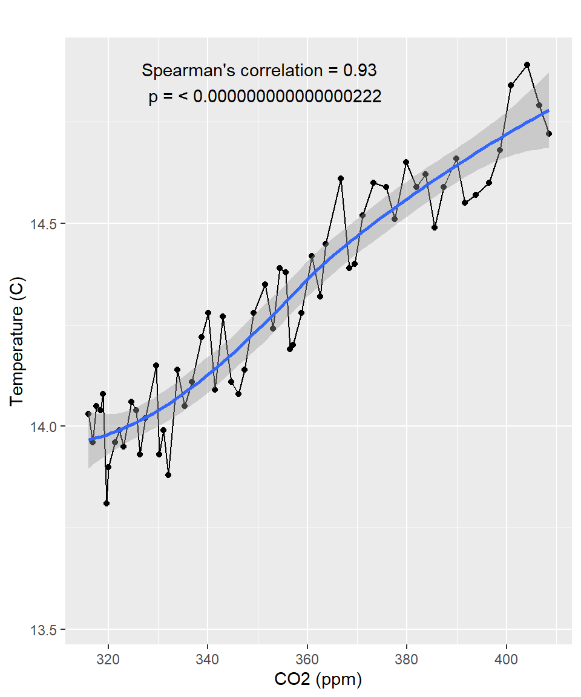
Linear Regression
What is regression?
Regression analysis is a generic term for a group of different statistical techniques.
The purpose of all these techniques is to examine the relationship between variables.
- Regression aims to find the best-fitting linear equation ( \(Y = \beta_0 + \beta_1 X_1 + \epsilon\) ) that describes the relationship between the dependent variable (often denoted as \(Y\) ) and independent variables (denoted as \(X1, X2, ..., Xn\) ).
What can we accomplish with linear regression?
- Describing the nature of the relationship between two variables.
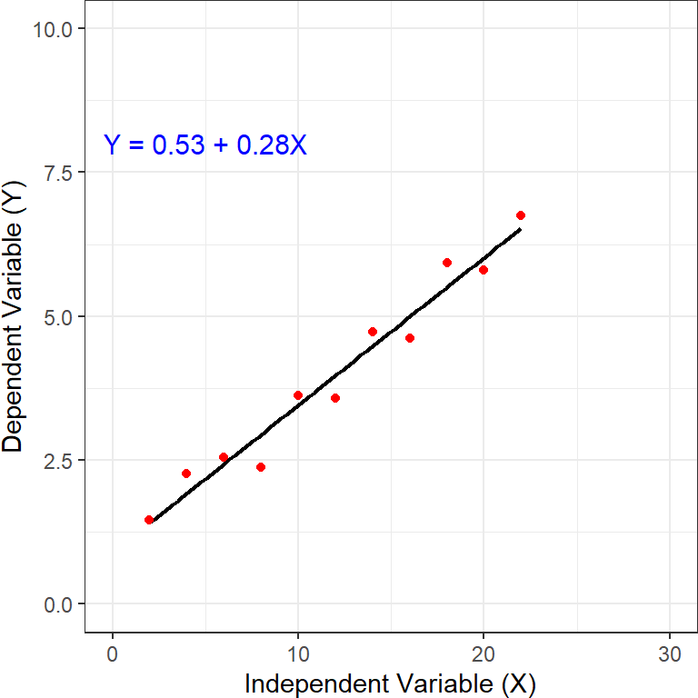
What can we accomplish with linear regression?
Describing the nature of the relationship between two variables.
Predicting the dependent variable within the range of observed values. Aim to forecast y-values within the range of observed x-values. Offers relatively more certainty due to reliance on known data.
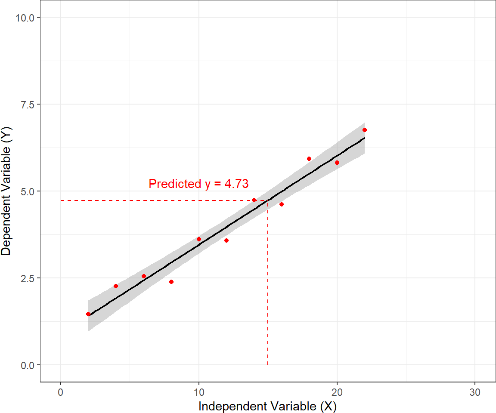
What can we accomplish with linear regression?
Describing the nature of the relationship between two variables.
Predicting the dependent variable within the range of observed values. Aim to forecast y-values within the range of observed x-values. Offers relatively more certainty due to reliance on known data.
Predicting the dependent variable beyond the range of observed values.
- Represents an exploration beyond the limits of observed data.
- Naturally, this type of objective carries the greatest load of restrictions, assumptions, caveats, and risk of error.
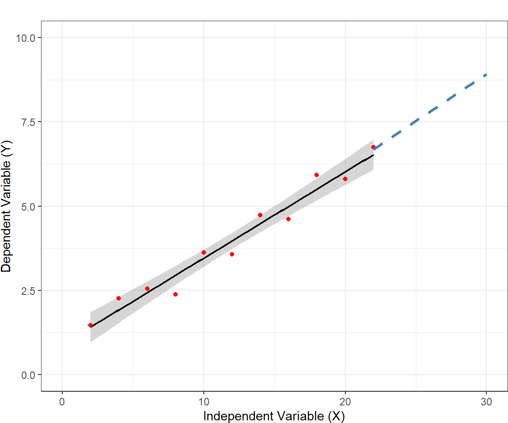
When to use a Simple Linear Regression
- You have two continuous variables measured in the same unit.
- You suspect the variables are related and vary in unison.
- You aim to predict one variable based on the other.
- You want to evaluate a trend (slope) over multiple measurements.
Assumptions
- Linear regression algorithm assumes the following:
- Linear relationship: The dependent and independent variables are linearly related.
- No multicollinearity: Independent variables should not be highly correlated.
- Homoscedasticity: The error term should remain constant across all levels of the independent variables.
- Normal distribution of error terms: Error terms should follow a normal distribution.
- No autocorrelation: The error terms should not show patterns.
Mathematically
- The simple linear model is defined as:
\[ Y = \beta_0 + \beta_1 X + \epsilon \]
- Where:
- \(Y\) is the dependent variable.
- \(X\) is the independent variable.
- \(\beta_0\) is the intercept.
- \(\beta_1\) is the slope of the line.
- \(\epsilon\) is the error term.
Mathematically
- The multiple linear model is defined as:
\[ Y = \beta_0 + \beta_1 X_1 + \beta_2 X_2 + \dots + \beta_p X_p + \epsilon \]
- Where:
- \(Y\) is the dependent variable.
- \(X_1, X_2, \dots, X_p\) are the independent variables.
- \(\beta_0\) is the intercept.
- \(\beta_1, \beta_2, \dots, \beta_p\) are the coefficients (slopes) for each predictor.
- \(\epsilon\) is the error term.
Linear Models in R
lm()fits linear models in R
- Simple linear regression
- where:
- y is your outcome
- x is your predictor
Linear Models in R
lm()fits linear models in R- Multiple linear regression
- where:
- y is your outcome
- x is/are your predictor(s)
Example: Simple linear regression
Step 1. Visualize the data
Step 2. Fit the linear model
Call:
lm(formula = ageInYears ~ proportionBlack, data = lion_data)
Residuals:
Min 1Q Median 3Q Max
-2.5449 -1.1117 -0.5285 0.9635 4.3421
Coefficients:
Estimate Std. Error t value Pr(>|t|)
(Intercept) 0.8790 0.5688 1.545 0.133
proportionBlack 10.6471 1.5095 7.053 0.0000000768 ***
---
Signif. codes: 0 '***' 0.001 '**' 0.01 '*' 0.05 '.' 0.1 ' ' 1
Residual standard error: 1.669 on 30 degrees of freedom
Multiple R-squared: 0.6238, Adjusted R-squared: 0.6113
F-statistic: 49.75 on 1 and 30 DF, p-value: 0.00000007677Step 3. Check model assumpltions: Normality
- Get list of residuals to nest normality
Residuals plot
- Create residual plot
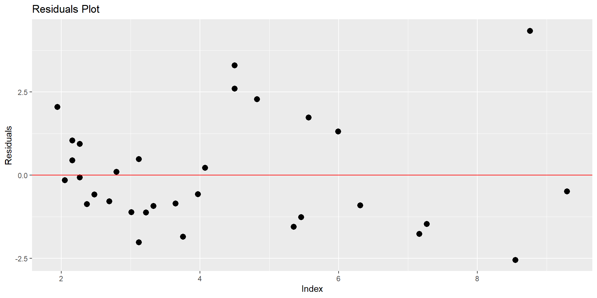
Analysis Of Variance (ANOVA)
What is ANOVA?
ANOVA (Analysis of Variance) is a statistical technique used to analyze the relationship between categorical variables and continuous variables in R.
This statistical method is an extension of the independent samples t-test for comparing the means in a situation where there are more than two groups.
Hypothesis in one-way ANOVA test
\(H_0\): All group means are equal.
- \(H_0: \mu_1 = \mu_2 = \mu_3 = \dots = \mu_k\)
- \(H_0: \mu_1 = \mu_2 = \mu_3 = \dots = \mu_k\)
\(H_a\): At least, the mean of one group is different
- \(H_A: \mu_i \neq \mu_j \quad \text{for some } i, j\)
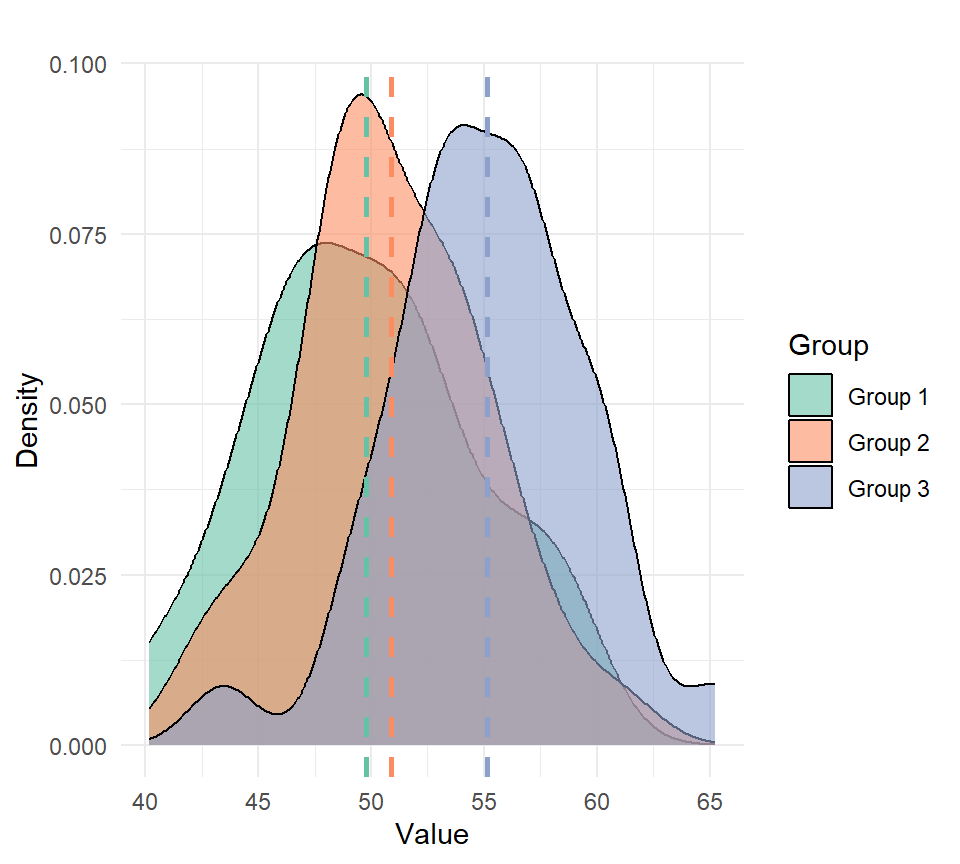
When would you run an ANOVA?
I have a continuous response variable.
I want to know the difference in that response between more than two groups.
I have one factor I am testing (One-Way ANOVA).
Assumptions
There are three key assumptions that you need to be aware of:
All groups are Independent.
The data is normally distributed.
All groups have approximately equal variance.
- A good rule of thumb: ratio of largest to smallest group stdev must be less than 2:1
- The ANOVA is less sensitive to this requirement when samples are of equal size from each population.
Assumptions
- A common misconception is that the response variable must be normally distributed when conducting an ANOVA. This is incorrect because the normality assumptions pertain to the residuals, not the response variable.
Assumptions
A common misconception is that the response variable must be normally distributed when conducting an ANOVA. This is incorrect because the normality assumptions pertain to the residuals, not the response variable.
The key assumption of ANOVA is that the residuals are independent and come from a normal distribution with mean 0 and variance \(\sigma^2\). Specifically:
\(y_{ij} = \mu + \alpha_i + \epsilon_{ij}\)
Where:
\(y_{ij}\) This is the observed value of the response variable for the \(j\)-th observation in the \(i\)-th group
\(\mu\) is the overall mean
\(\alpha_i\) is the effect of the \(i\)-th group
\(\epsilon_{ij} \sim \text{Normal}(0, \sigma^2)\), where \(\epsilon_{ij}\) represents the residual error.
How ANOVA works
How ANOVA works
- The ANOVA obtained value (the F-statistic) is a ratio of the Between Group Variation divided by the Within Group Variation:
\[F = \frac{\text{Between-group variance}}{\text{Within-group variance}}\]
- A large F is evidence against \(H_0\), since it indicates that there is more difference between groups than within groups.
One-way ANOVA Formulas
The formula for the Sum of Squares Between (SSB) is given by: \[ SSB = \sum_{j=1}^{C} n_j (\bar{x}_j - \bar{x})^2 \]
Where:
- \(C\) = number of groups
- \(n_j\) = sample size of group \(j\)
- \(\bar{x}_j\) = mean of group \(j\)
- \(\bar{x}\) = overall mean
- The formula for the Sum of Squares Within (SSW) is given by:
\[SSW = \sum_{j=1}^{C} \sum_{i=1}^{n_j} (\bar{x}_j - \bar{x})^2\]
- Where:
- \(C\) = number of groups
- \(n_j\) = sample size of group \(j\)
- \(\bar{x}_j\) = mean of group \(j\)
- \(\bar{x}\) = overall mean
Example: One-way ANOVA
Data visualization
- Visualize the data distribution using boxplots and jitter for individual points:
Running the ANOVA
- Run one-way ANOVA to assess differences between fertilizer groups:
Checking Assumptions: Normality
Checking Assumptions: Normality
- Check normality of residuals using a QQ plot and the Shapiro-Wilk test.
Check Assumptions: Homogeneity of Variances
The homogeneity of variances can also be checked using Bartlett’s.
Post-hoc test
Why Perform a Post-hoc Test?
When the overall p-value from the ANOVA is below the significance level (typically p < 0.05), it suggests that at least one group mean is different from the others.
However, ANOVA does not specify which groups are different; it only tells us that not all group means are equal.
To pinpoint which groups differ, we need to conduct a post-hoc test. This test controls for the family-wise error rate, ensuring accurate comparisons between group means.